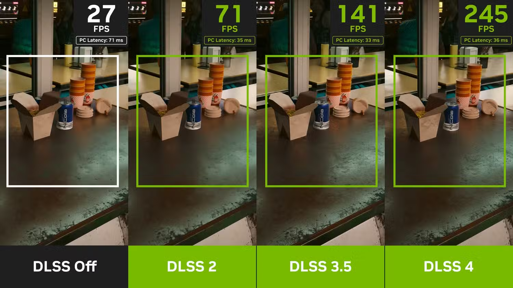

NVIDIA RTX 5090
Level Up Your Gaming Experience
RTX 5090
Powerful graphics card for gaming and professional work
- VRAM: 32GB
- Clock Speed: 2.5GHz
- TDP: 575W
Blackwell Core
Advanced Cores for Full Ray Tracing
- CUDA Cores: 21,760
- Tensor Cores: 5th-Gen
- Ray Tracing Cores: 4th-Gen
Powered by DLSS 4 and NVIDIA Reflex for Ultimate Performance and Responsiveness
DLSS represents an innovative collection of AI-powered graphics technologies designed to increase frame rates, minimize input delay, and enhance visual fidelity. The newest version, DLSS 4, introduces advanced multi-frame generation capabilities alongside improved ray tracing reconstruction and upscaling features, utilizing the processing power of GeForce RTX 50 Series graphics cards and their fifth-generation Tensor Cores. When using DLSS on GeForce RTX hardware, gamers benefit from cloud-based AI supercomputing that continuously optimizes their gaming performance.
Device Requirements and Compatibility
- Motherboard: The RTX 5090 is backwards compatible with older PCIe generations (3.0, 4.0), but a modern motherboard with a 5.0 slot is best for maximizing performance.
- CPU: While technically compatible with older CPUs, a high-end CPU is recommended to avoid a bottleneck. This is especially important at lower resolutions or high refresh rates, though a powerful CPU won't be a bottleneck at 4K with all settings maxed out.
- Drivers:Keeping the graphics drivers up to date is essential for optimal performance and compatibility with the latest games and applications.
- System : The RTX 5090 is compatible with Windows 10 and later versions, as well as various Linux distributions that support NVIDIA drivers.
- Monitor: To fully utilize the RTX 5090's capabilities, a high-resolution monitor (1440p or 4K) with a high refresh rate is recommended for the best gaming experience.
- Cooling: The RTX 5090 generates significant heat, so a well-ventilated case with good airflow and possibly additional cooling solutions is important to maintain optimal performance and longevity of the card.
- The RTX 5090 is a high-power card, and a modern, high-wattage PSU is crucial. NVIDIA recommends a minimum wattage of around 575W or higher, so it's best to have a powerful PSU with some headroom.